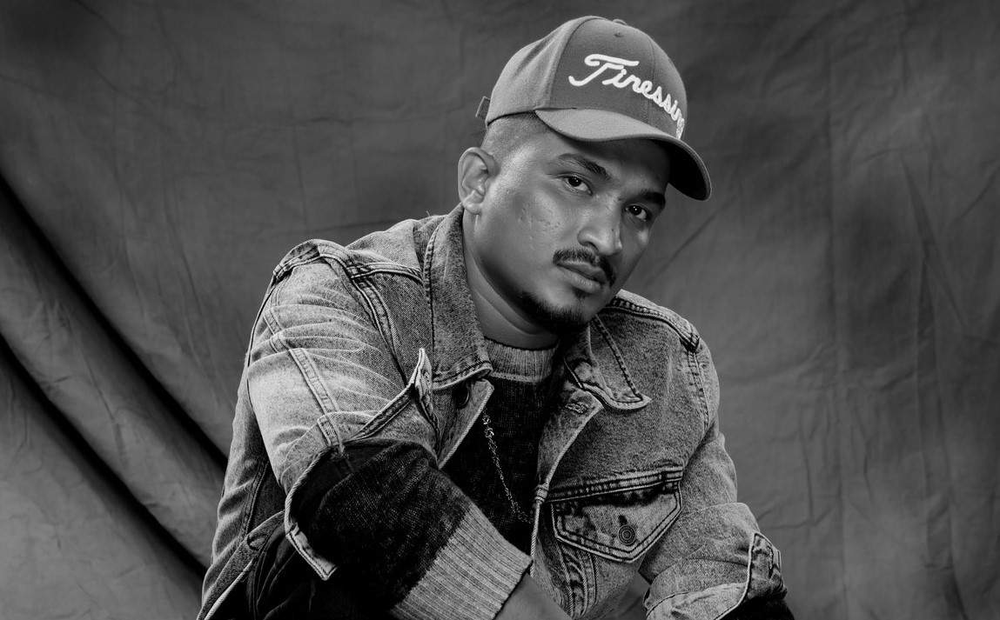

DIVINE

"The best rapper of India"
Some glimpse of his life
- Vivian Fernandes, better known by his stage name DIVINE, is an Indian rapper from Mumbai, Maharashtra.
- Divine was part of the hip hop crew called Mumbai's Finest. He often raps about his own life experiences, such as the life of the poor people in Mumbai and his upbringing with a single mother.
- Divine obtained the attention of Sony Music India by the release of his song 'Yeh Mera Bombay'.
- The song later went on to win the Best Video of the Year award by Rolling Stone India in the same year.
- Divine released his breakout single Mere Gully Main featuring Naezy on 16 April 2015. The song went viral and many Bollywood celebrities shared it on social media.
- He collaborated with Indian DJ Nucleya on Nucleya's album Bass Rani, which helped him gain even more popularity. The song won Best EDM track of the Year in the GIMA Awards in 2015.
- On 24 March 2016, his debut solo single Jungli Sher released and it ruled the charts because of its raw depiction of the life of the poor in Mumbai. He took the song to the Breakfast Show ahead of BBC Asian Network Live on 29 April 2016.
- Divine appeared on the BBC Asian Network in the Charlie Sloth Show and was the first Hindi-speaking rapper to freestyle on the show and also the first to rap in Hindi with the name-giving host in attendance. He was also featured on Brapp TV.
- He appeared as a feature on a record called City Slums by Indian-American rapper/singer/songwriter Raja Kumari in May 2017. The song crossed 2 million views on YouTube within 24 hours of its release.
- Divine made his Bollywood debut for the film Mukkabaaz with the song Paintra. The track was another collaboration with Nucleya and came out on 1 December 2017.
- In February 2019 he announced the founding of a new company, Gully Gang Entertainment, a record label to recruit and produce Hip Hop talent in the Mumbai area. The Song Gully Gang Cypher.
- In July 2019, Divine released a documentary film about his career so far entitled Gully Life - The story of DIVINE. It first aired on TV on channels such as the Discovery Channel and was released on Divine's YouTube Channel a week later.
- On 20 August 2019, Nas' Mass Appeal Records and Universal Music India launched Mass Appeal India and signed Divine. Universal Music Group and Mass Appeal jointly took the step to take global hip-hop artist to India and globalize the Indian hip-hop scene.
- On 20 September 2020 Divine appeared on the international remix of Bando Diaries by UK rapper Dutchavelli alongside OneFour from Australia, Noizy from Albania and Kekra from France.
- Divine second album, 'Punya Paap', was released on 3 December 2020, under the label Mass Appeal India. It consists of 11 tracks, with features from Nas, Cocoa Sarai, Dutchavelli, Stylo G, D' Evil, MC Altaf, Lisa Mishra and Phenom.
“I just felt I should keep making music. The second goal was to keep making music And the third goal was also to keep making music.” - Divine
If you have time, you should read more about this incredible Rapper on his Wikipedia Entry.